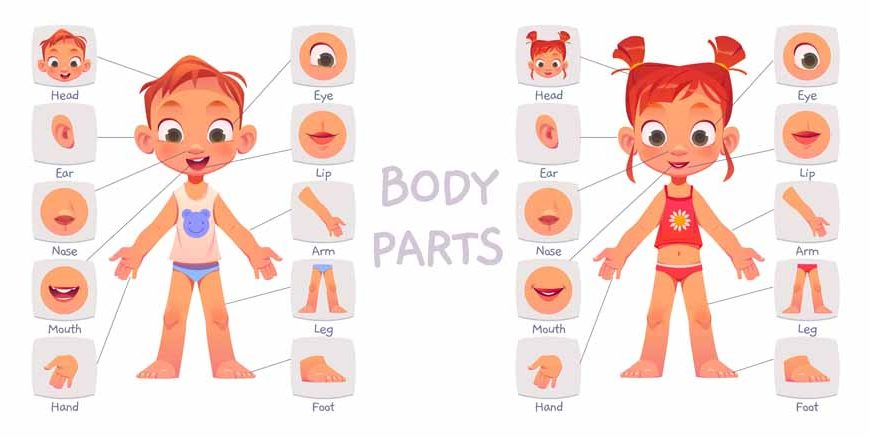
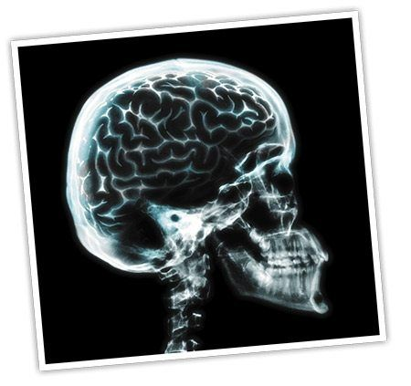
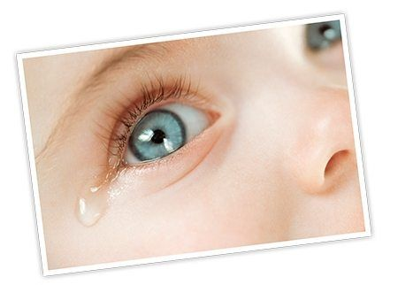
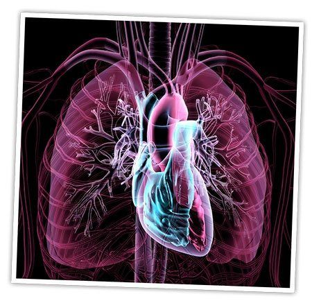

15 FUN FACTS ABOUT THE HUMAN BODY!!!
Kid's club

Right, little gang, it's time to take a look at how amazing (and a bit freaky!) we all are! Check out these 15 fascinating facts about the human body…
- Your mouth produces about one litre of salivaeach day!
- Your brain is sometimes more active when you're asleep than when you're awake.
-
- Laid end to end, an adult's blood vessels could circle Earth's equator four times!
- The word muscle comes from Latin term meaninglittle mouse, which is what Ancient Romans thought flexed bicep muscles resembled.
-
- Bodies give off a tiny amount of light that's too weak for the eye to see.
- The average person has 67 different species of bacteria in their belly button.
- You lose about 4kg of skin cells every year!
- Babies don.t shed tears until they're at least one month old.
-
- Information zooms along nerves at about 400kmph!
- The human heart beats more than three billion times in an average lifespan.
-
- Your left lung is about10 percent smaller than your right one.
- Human teeth are just as strong as shark teeth.
- Scientists estimate that the nose can recognise a trillion different scents!
 -
-
- Humans are the only species known to blush.
 -
-
- Your blood makes up about eight percent of your body weight.
Want to find out more about the amazing human body ?
Then check out the following articles about the human digestive system, brain, eye!